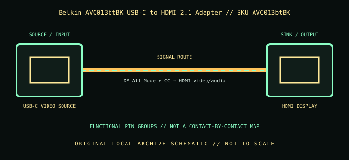

[ INDIVIDUAL COMPONENT // CABLES & ADAPTERS ]
Belkin AVC013btBK USB-C to HDMI 2.1 Adapter
A compact one-way USB-C video adapter with a short tether and HDMI output; it requires video-capable USB-C and does not turn a data-only port into a display source.

IDENTIFICATION: Catalog SKU: AVC013btBK. Record the complete label, regional suffix, hardware model/revision, and cable length printed on the specimen; nearby model variants are not interchangeable by assumption.
Specifications & connector revisions
| Catalog subcategory | Display cables and adapters |
|---|---|
| Manufacturer / SKU | Belkin AVC013btBK USB-C to HDMI 2.1 Adapter — AVC013btBK |
| Connector ends / length | USB-C male host plug on an approximately 11 cm (4.3 in) tether → HDMI Type-A female display socket. |
| Protocol and revision | Belkin specifies HDMI 2.1 capability with advertised maxima of 8K at 60 Hz or 4K at 144 Hz, HDR10+, and variable-refresh support. Actual mode depends on host DisplayPort Alt Mode/DSC output, adapter negotiation, display input, bandwidth allocation, and protected-content path. |
| Signal path / pinout | USB-C source-side video is transported using DisplayPort Alt Mode; the adapter converts that stream to HDMI at the female output. USB-C configuration/control pins establish the mode; HDMI carries video/audio and control. It is not a passive connector-rearrangement cable, and no internal conversion-chip pinout is inferred. |
| Mode and bandwidth caveats | The tether is short; the separate HDMI cable adds the longer run and is independently subject to quality, length, and HDMI certification limits. Peak 8K/4K figures describe supported combinations, not every computer/display pairing. |
Compatibility & direction
Connect USB-C/Thunderbolt host ports only when the device documentation confirms display output; attach an HDMI cable from the adapter’s female HDMI socket to the display. It is not reversible and is not an HDMI-source-to-USB-C-display solution. Validate host OS/GPU, DSC, display refresh, HDR/VRR, and HDCP support for the desired mode.
Handling & archival notes
Keep the stated source and sink ends in their specified direction; do not force keyed connectors or use this product as an assumed voltage/pinout substitute for a superficially similar cable. Support the tether during connection, keep contacts clean and dry, and avoid tight bends at molded strain reliefs.
For the archive, photograph both connector faces, labels, packaging SKU, length, and revision. If a mode is tested, record source model/GPU and firmware, sink model/firmware, intermediate adapters, cable run, resolution, refresh rate, chroma/HDR, and whether HDCP succeeds. Test results apply to that exact chain, not all variants.
Manufacturer and standards sources
- Belkin — Connect USB-C to HDMI 2.1 Adapter, AVC013btBKManufacturer product page for SKU, adapter type, and advertised modes.
- Belkin — Connect USB-C to HDMI 2.1 Adapter FAQsManufacturer support article for the AVC013 family.
Maximum modes are source-, sink-, firmware-, signal-path-, and revision-dependent. Manufacturer documentation for the exact SKU and hardware model takes precedence over family names and connector appearance.